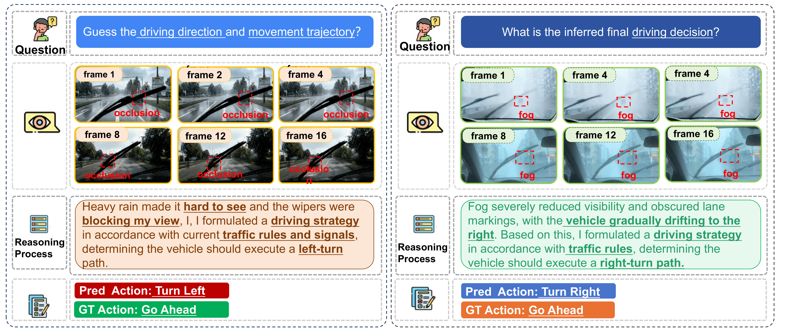
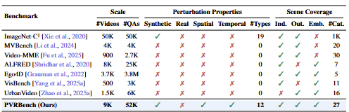
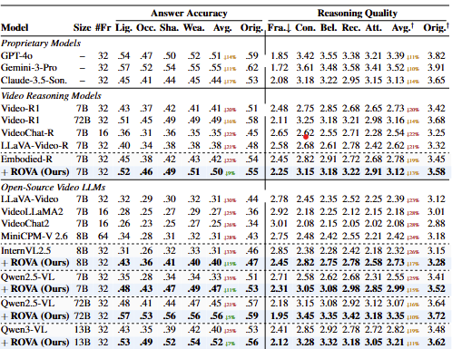
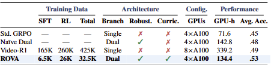
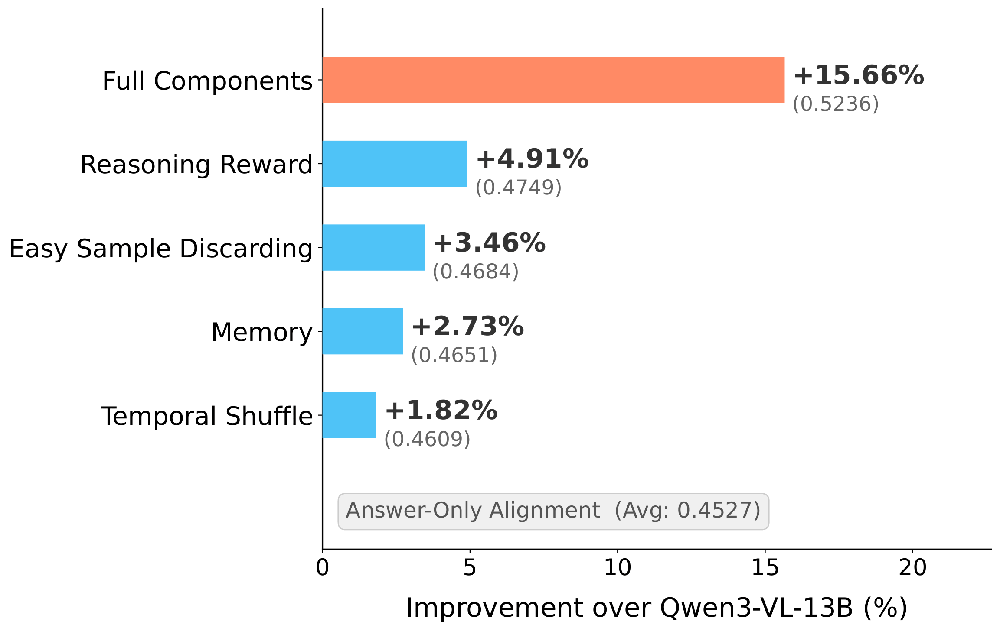
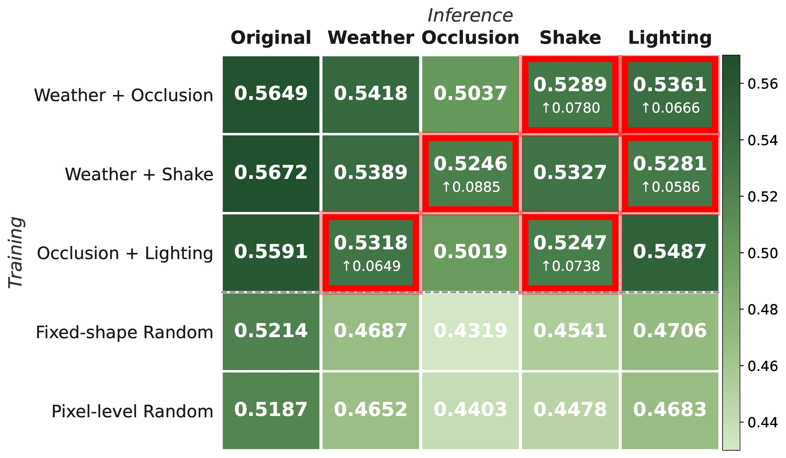
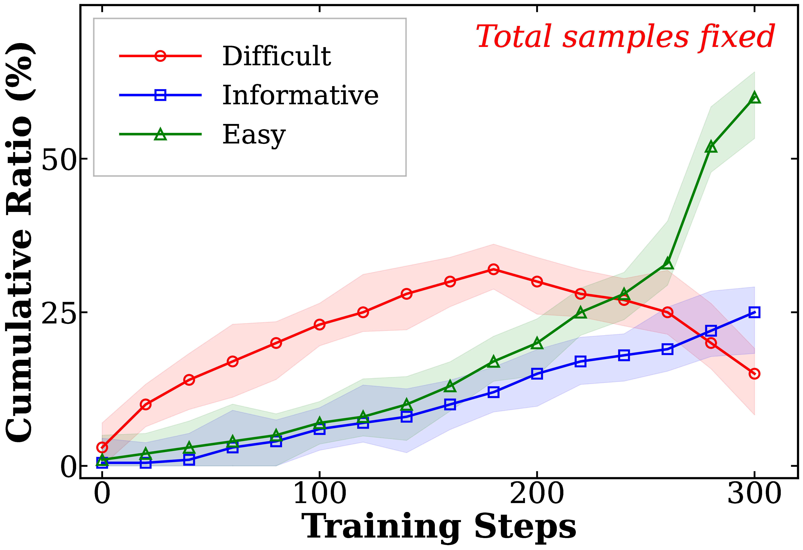
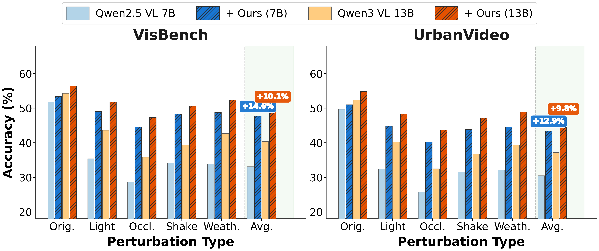
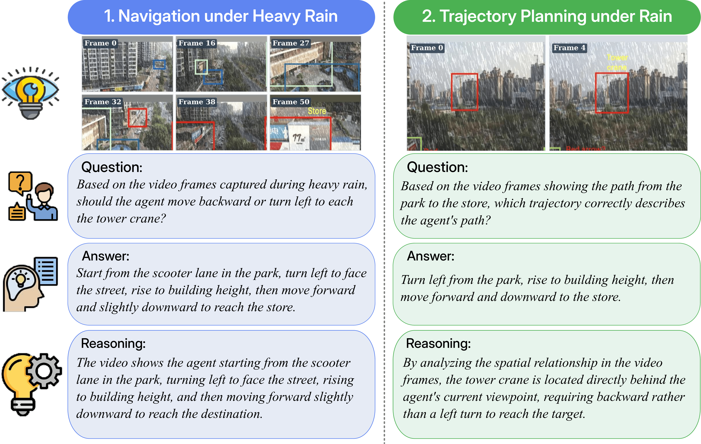

TL;DR
In real-world deployment, vision-language models often encounter disturbances such as weather, occlusion, and camera motion. Under such conditions, their understanding and reasoning degrade substantially. We propose ROVA, a training framework that improves robustness via a robustness-aware consistency reward under spatio-temporal corruptions. ROVA introduces a difficulty-aware online training strategy that prioritizes informative samples based on the model's evolving capability. We also introduce PVRBench, a new benchmark with 12 realistic perturbation types across 27 scene categories for evaluating accuracy and reasoning quality under realistic disturbances.
ROVA: Robust Video Alignment

Figure 2. ROVA consists of three stages: (1) Structured spatio-temporal corruption generates realistic perturbations; (2) Self-reflective difficulty-aware training continuously re-estimates sample difficulty via a memory buffer; (3) Dual-branch alignment uses clean and corrupted paths with GRPO to optimize robustness-aware consistency, format, and accuracy rewards.
VLMs Fail Under Realistic Perturbations

Figure 1. Failure cases of state-of-the-art VLMs (e.g., Qwen2.5-VL) under occlusion (left) and fog (right). The model incorrectly predicts “Turn Left” or “Turn Right” instead of the ground-truth “Go Ahead”, demonstrating how visual corruptions drastically impair video reasoning capability.
Framework Components
① Structured Corruption
Injects temporally coherent, spatially grounded perturbations — weather effects (rain, snow, hail, storm), photometric shifts (dusk, night, overexposure), camera shake, and random occlusion — to simulate realistic visual disturbances.
② Self-Reflective Difficulty
The model evaluates its own predictions on corrupted samples. Easy samples are discarded; hard ones are stored in a memory buffer and periodically re-evaluated, ensuring training focuses on the most informative examples.
③ Dual-Branch Alignment
Clean and perturbed branches share weights and are jointly optimized via GRPO using format, accuracy, and robustness-aware consistency rewards to minimize reasoning divergence.
PVRBench: Perturbed Video Reasoning Benchmark

Table 1. Comparison with existing video benchmarks. PVRBench is the first to provide synthetic, spatial, and temporal perturbations across 27 scene categories with 9K videos and 52K QA pairs, enabling comprehensive robustness evaluation.
Main Results on PVRBench

Table 2. Answer accuracy and reasoning quality across four perturbation types on PVRBench. ROVA consistently outperforms both proprietary models (GPT-4o, Gemini-3-Pro, Claude-3.5-Sonnet) and open-source video reasoning models (Video-R1, Embodied-R, LLaVA-Video) at the 7B scale, while the 72B variant achieves state-of-the-art performance.
Training Efficiency & Data Economy

Table 3. ROVA achieves higher accuracy using only 32.5K training samples and 4×A100 GPUs (134 GPU-hours) — 60% fewer GPU hours and 8× less data than Video-R1 (425K samples, 8×A100, 339 GPU-hours).
Ablation Studies

Figure 5a. Contribution of each ROVA component. The robustness-aware consistency reward provides the largest single gain, while all components combined yield the best performance.

Figure 5b. Structured masks generalize to unseen perturbation types (hatched bars), significantly outperforming random masking across all corruption categories.

Figure 5c. Dynamics of self-reflective evaluation throughout training. As the model improves, easy samples are increasingly discarded while difficult samples are periodically re-evaluated and reclassified, ensuring the training curriculum adapts to the model's evolving capability.
Cross-Benchmark Generalization

Figure 19. ROVA generalizes beyond PVRBench: accuracy improvements of +14.6% on VisBench and +12.9% on UrbanVideo under perturbations, with additional gains on clean (unperturbed) evaluation as well. Both 7B and 13B configurations show consistent improvements across all perturbation types.
Case Study: Reasoning Under Rain

Case Study. Two qualitative examples of ROVA reasoning under heavy rain perturbation. Left: Navigation under heavy rain — the model correctly identifies the path from a park to a store through occluded urban scenes. Right: Trajectory planning — the model reasons about spatial relationships in rain-degraded video frames to determine the correct approach direction toward a tower crane. Both examples demonstrate coherent question understanding, accurate answer generation, and faithful chain-of-thought reasoning despite severe visual degradation.
Citation
If you find this work useful in your research, please consider citing:
@article{he2026rova,
title = {Are Video Reasoning Models Ready to Go Outside?},
author = {He, Yangfan and Boo, Changgyu and Yoon, Jaehong},
journal = {arXiv preprint arXiv:2603.10652},
year = {2026}
}